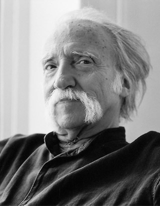
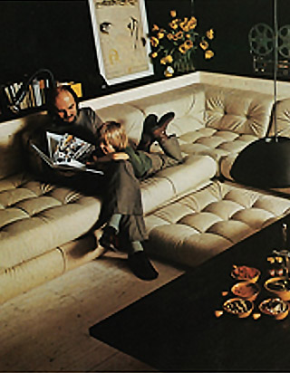

Painter, sculptor, designer... Hans Hopfer designed sofas that are, for many, the indisputable “signature” of Roche Bobois’ collections.
In the 1970s, Hopfer’s innovative and informal approach to comfort had a profound infl uence on the way people furnished and arranged their living space.
In 1971, he created the Mah Jong, a sofa based on the total freedom of function and form. Starting with three basic elements that can be combined or stacked, the Mah Jong allows limitless options of composition.
It can be an armchair, sofa, lounge chair or bed; a space in which to rest, to play or to lounge. It encourages experimentation and breaks the rules of formal living, reflecting the nonconformist era in which it was born.
Avant-garde when first created, iconic today, and “dressed” by Missoni Home and Jean Paul Gaultier, this “free form” modular seating is the reference point for fully modular and creative design.